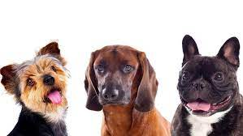
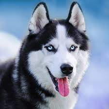
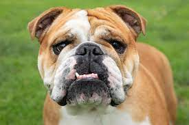
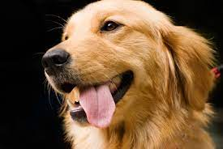
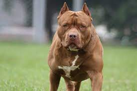
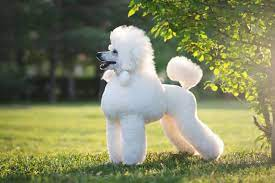

|  |
-Tipuri de câini-
scris deRusu Flavius😀
|
Câini sunt cunoscuți drept cei mai buni prieteni ai oamenilor,însă nu orce tip de câine îi tolerează pe aceștia.
Există câini mai blânzi, calmi și liniștiți, însă sunt și tipuri foarte agresive și periculoase.
În continuare vă prezint o listă cu diferite specii canine, unele mai inocente și altele mai agresive.
1.Husky
|  |
| Periculos |
⭐⭐ |
| Raritate: |
Rar |
|
Acești câini sunt pe departe unii dintre cele mai frumoase rase de câini din lume. Sunt foarte populari în America și
se spune că sunt o companie plăcută pentru copii. Au fost folosiți drept câini de sanie în trecut.
Alimente consumate de un Husky:
- Carne de porc
- Carne de pui
- Carne de curcan
Pentru mai multe detalii despre această rasă apăsați aici
2.Bulldog
|  |
| Periculos |
⭐⭐⭐⭐ |
| Raritate: |
epic |
|
Bulldog este o rasă de câine cunoscută drept agresivă. Și-a luat numele după un sport numit Bullbaiting și este rasa
cea mai folosită ca mascotă în lumea sportului. Nu se pricep să înnoate.
Alimente consumate de un Bulldog:
- Carne
- Pește
- Fructe
Pentru mai multe detalii despre Bulldog apăsați aici
3.Golden Retriever
|  |
| Periculos |
⭐⭐ |
| Raritate: |
comun |
|
Această rasă canină este cunoscută ca fiind inofensivă în fața oamenilor și mai are denumirea de "câine de copii".
Este foarte receptiv și se adaptează foarte ușor printre oameni.
Alimente consumate de un Golden Retriever:
Pentru mai multe detalii despre Golden Retriever apăsați aici
4.Pittbull
|  |
| Periculos |
⭐⭐⭐⭐⭐ |
| Raritate: |
epic |
|
Pitbull este cunoscută ca și cea mai periculoasă rasă de câini. Între anii 2015-2017 acest câine a fost cauza a 13%
din atacurile canine asupra americanilor din care a rezultat vătămarea corporală.
Alimente consumate de un Pitbull:
- Carne de pui
- Carne de porc
- Carne de miel
Pentru mai multe detalii despre Pitbull apăsați aici
5.Poodle
|  |
| Periculos |
⭐ |
| Raritate: |
legendar |
|
Termenul pudel definește un grup de rase de câini format din Pudel Standard, Pudel în miniatură și Pudel Toy.
Originea rasei este încă discutabilă, generându-se o dispută dacă pudelul provine din Germania sau din franțuzescul Barbet.
Alimente consumate de un Poodle:
- Carne de pui
- Carne de porc
- Carne de miel
Pentru mai multe detali despre aceasta rasa apasati aici
Acum că ai ajuns la final, poți mai jos să îmi spui ce rasă de câine ai tu 😀